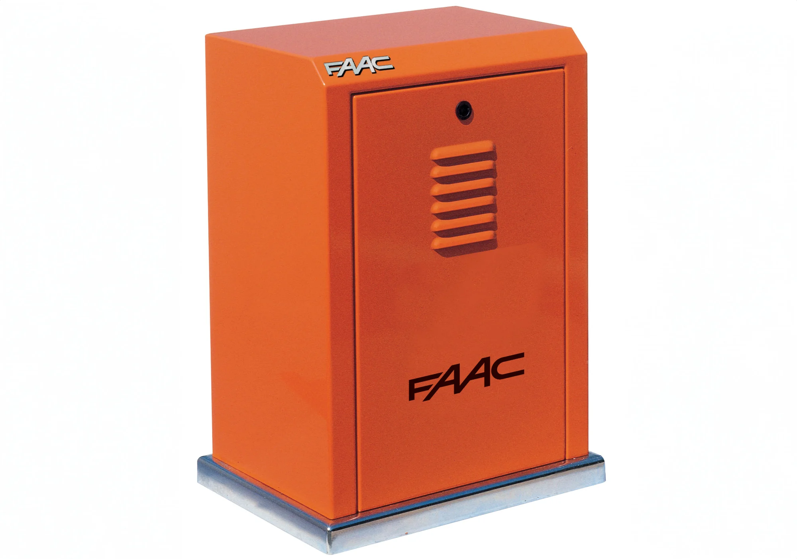
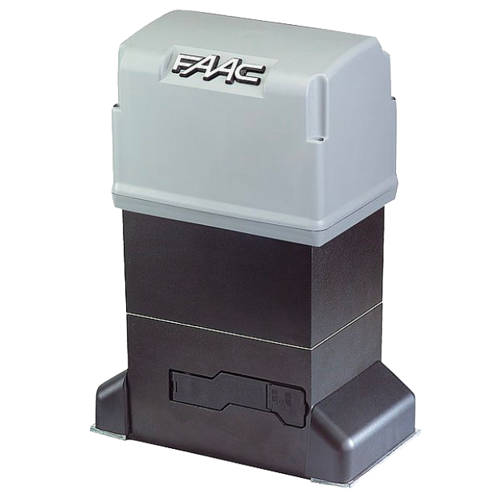

Automatización para puertas corredizas con peso de hasta 3.500 kg.
Nueva tarjeta electrónica E844 3PH integrada con programación mediante pantalla y botones.
Embrague de doble disco en baño de aceite.
Dispositivo de frenado: distancias reducidas de parada y cierre seguro de la cancela.
Carcasa de acero con tratamiento de cataforesis y pintura en poliéster.


Diseño robusto para uso intensivo. Su motorreductor trifásico de 850 W soporta cargas de hasta 3.500 kg y está diseñado para funcionar de manera continua incluso en entornos exigentes.
Funcionamiento suave y controlado. Gracias al embrague de doble disco en baño de aceite, permite un ajuste fino de la fuerza de operación, reduciendo golpes o vibraciones.
Seguridad integrada. El motor incluye bloqueo automático cuando no está en uso, evitando aperturas no deseadas, y protección térmica para prolongar la vida útil.
Construcción duradera. Carcasa resistente al clima con grado de protección IP55 y tratamiento anticorrosión, ideal para exteriores exigentes.

Sus finales de carrera mecánicos (con palanca y rodillo) permiten definir con precisión los puntos de apertura y cierre. Además, incorpora un sistema de desbloqueo manual para manipulación en caso de cortes de energía.
Información técnica

Automatización para puertas corredizas con peso de hasta 800 kg.

Motor electromecánico para hojas de hasta 900 kg a 110V.

Motor electromecánico para hojas de hasta 1.800 kg a 115V.

Motor electromecánico para hojas de hasta 1.800 kg, velocidad de 42 m/min a 220V.